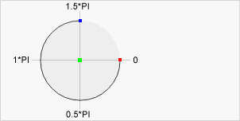
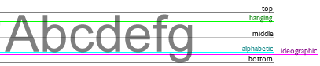

Colors, Styles, and Shadows
fillStyle
The fillStyle property sets or returns the color, gradient, or pattern used to fill the drawing.
Syntax:
context.fillStyle=color | gradient | pattern;
Parameter / Values:
color: A CSS color value that indicates the fill color of the drawing. Default value is #000000
gradient: A gradient object (linear or radial) used to fill the drawing
pattern: A pattern object to use to fill the drawing
矩形
strokeStyle
The strokeStyle property sets or returns the color, gradient, or pattern used for strokes.
Syntax:
context.strokeStyle=color | gradient | pattern;
Parameter / Values:
color: A CSS color value that indicates the stroke color of the drawing. Default value is #000000
gradient: A gradient object (linear or radial) used to create a gradient stroke
pattern: A pattern object used to create a pattern stroke
單色外框
漸層外框
文字漸層外框
shadowColor, shadowBlur, shadowOffsetX, shadowOffsetY
shadowColor: Sets or returns the color to use for shadows. Value: css color (default: #000000)
shadowBlur: Sets or returns the blur level for shadows. Value: number (default: 0)
shadowOffsetX: Sets or returns the horizontal distance of the shadow from the shape. Value: number (default: 0)
shadowOffsetY: Sets or returns the vertical distance of the shadow from the shape. Value: number (default: 0)
陰影的各種屬性
createLinearGradient()
The createLinearGradient() method creates a linear gradient object.
The gradient can be used to fill rectangles, circles, lines, text, etc.
Use this object as the value to the strokeStyle or fillStyle properties.
Syntax:
context.createLinearGradient(x0,y0,x1,y1);
Parameter / Values:
x0 (The x-coordinate of the start point of the gradient)
y0 (The y-coordinate of the start point of the gradient)
x1 (The x-coordinate of the end point of the gradient)
y1 (The y-coordinate of the end point of the gradient)
漸層(上到下)
漸層(左到右)
createRadialGradient()
The createRadialGradient() method creates a radial/circular gradient object.
The gradient can be used to fill rectangles, circles, lines, text, etc.
Use this object as the value to the strokeStyle or fillStyle properties.
Syntax:
context.createRadialGradient(x0,y0,r0,x1,y1,r1);
Parameter / Values:
x0 (The x-coordinate of the starting circle of the gradient)
y0 (The y-coordinate of the starting circle of the gradient)
r0 (The radius of the starting circle)
x1 (The x-coordinate of the ending circle of the gradient)
y1 (The y-coordinate of the ending circle of the gradient)
r1 (The radius of the ending circle)
放射漸層
addColorStop()
The addColorStop() method specifies the colors and position in a gradient object.
The addColorStop() method is used together with createLinearGradient() or createRadialGradient().
You can call the addColorStop() method multiple times to change a gradient. If you omit this method for gradient objects, the gradient will not be visible. You need to create at least one color stop to have a visible gradient.
Syntax:
gradient.addColorStop(stop,color);
Parameter / Values:
Value: stop (A value between 0.0 and 1.0 that represents the position between start and end in a gradient)
Value: color (A CSS color value to display at the stop position)
漸層(多個顏色)
createPattern()
The createPattern() method repeats the specified element in the specified direction.
The element can be an image, video, or another <canvas> element.
The repeated element can be used to draw/fill rectangles, circles, lines etc.
Syntax:
context.createPattern(image,"repeat|repeat-x|repeat-y|no-repeat");
Parameter / Values:
image (Specifies the image, canvas, or video element of the pattern to use)
repeat (Default. The pattern repeats both horizontally and vertically)
repeat-x (The pattern repeats only horizontally)
repeat-y (The pattern repeats only vertically)
no-repeat (The pattern will be displayed only once (no repeat))
貼上圖樣
Line Styles
lineCap
The lineCap property sets or returns the style of the end caps for a line.
Syntax:
context.lineCap="butt | round | square";
Parameter / Values:
butt (Default. A flat edge is added to each end of the line)
round (A rounded end cap is added to each end of the line)
square (A square end cap is added to each end of the line)
線條端點的樣式
lineJoin
The lineCap property sets or returns the style of the end caps for a line.
Syntax:
context.lineJoin="bevel|round|miter";
Parameter / Values:
bevel (Creates a beveled corner)
round (Creates a rounded corner)
miter (Default. Creates a sharp corner)
線條接點的樣式
lineWidth
The lineWidth property sets or returns the current line width, in pixels.
Parameter / Values:
number (The current line width, in pixels, default: 1)
線條的寬度
miterLimit
The miterLimit property sets or returns the maximum miter length.
Parameter / Values:
number (A positive number that specifies the maximum miter length. If the current miter length exceeds the miterLimit, the corner will display as lineJoin "bevel". default: 10)
線條接點尖角的設定
Rectangles
rect()
The rect() method creates a rectangle.
Use the stroke() or the fill() method to actually draw the rectangle on the canvas.
Syntax:
context.rect(x,y,width,height);
Parameter / Values:
x (The x-coordinate of the upper-left corner of the rectangle)
y (The y-coordinate of the upper-left corner of the rectangle)
width (The width of the rectangle, in pixels)
height (The height of the rectangle, in pixels)
畫一個矩形框
fillRect()
The fillRect() method draws a "filled" rectangle. The default color of the fill is black.
Use the fillStyle property to set a color, gradient, or pattern used to fill the drawing.
Syntax:
context.fillRect(x,y,width,height);
Parameter / Values:
x (The x-coordinate of the upper-left corner of the rectangle)
y (The y-coordinate of the upper-left corner of the rectangle)
width (The width of the rectangle, in pixels)
height (The height of the rectangle, in pixels)
畫一個矩形色塊
strokeRect()
The strokeRect() method draws a rectangle (no fill). The default color of the stroke is black.
Use the strokeStyle property to set a color, gradient, or pattern to style the stroke.
Syntax:
context.strokeRect(x,y,width,height);
Parameter / Values:
x (The x-coordinate of the upper-left corner of the rectangle)
y (The y-coordinate of the upper-left corner of the rectangle)
width (The width of the rectangle, in pixels)
height (The height of the rectangle, in pixels)
畫一個矩形框
clearRect()
The clearRect() method clears the specified pixels within a given rectangle.
Syntax:
context.clearRect(x,y,width,height);
Parameter / Values:
x (The x-coordinate of the upper-left corner of the rectangle to clear)
y (The y-coordinate of the upper-left corner of the rectangle to clear)
width (The width of the rectangle to clear, in pixels)
height (The height of the rectangle to clear, in pixels)
清除綠色矩形的部份區塊
Paths
fill()
The fill() method fills the current drawing (path). The default color is black. Use the fillStyle property to fill with another color/gradient.
If the path is not closed, the fill() method will add a line from the last point to the startpoint of the path to close the path (like closePath()), and then fill the path.
畫兩個矩形
stroke()
The stroke() method actually draws the path you have defined with all those moveTo() and lineTo() methods. The default color is black. Use the strokeStyle property to draw with another color/gradient.
畫一個ㄇ形路徑
beginPath()
The beginPath() method begins a path, or resets the current path.
Use moveTo(), lineTo(), quadricCurveTo(), bezierCurveTo(), arcTo(), and arc(), to create paths.
Use the stroke() method to actually draw the path on the canvas.
畫兩條路徑
moveTo()
The moveTo() method moves the path to the specified point in the canvas, without creating a line. Use the stroke() method to actually draw the path on the canvas.
Syntax:
context.moveTo(x,y);
Parameter / Values:
x (The x-coordinate of where to move the path to)
y (The y-coordinate of where to move the path to)
畫一條路徑
closePath()
The closePath() method creates a path from the current point back to the starting point. Use the stroke() method to actually draw the path on the canvas.
Use the fill() method to fill the drawing (black is default). Use the fillStyle property to fill with another color/gradient.
畫一個三角形
lineTo()
The lineTo() method adds a new point and creates a line TO that point FROM the last specified point in the canvas (this method does not draw the line).
Use the stroke() method to actually draw the path on the canvas.
Syntax:
context.lineTo(x,y);
Parameter / Values:
x (The x-coordinate of where to create the line to)
y (The y-coordinate of where to create the line to)
畫一個L形路徑
clip()
The clip() method clips a region of any shape and size from the original canvas.
Once a region is clipped, all future drawing will be limited to the clipped region (no access to other regions on the canvas). You can however save the current canvas region using the save() method before using the clip() method, and restore it (with the restore() method) any time in the future.
裁剪一個方形的區域
quadraticCurveTo()
The quadraticCurveTo() method adds a point to the current path by using the specified control points that represent a quadratic Bézier curve.
A quadratic Bézier curve requires two points. The first point is a control point that is used in the quadratic Bézier calculation and the second point is the ending point for the curve. The starting point for the curve is the last point in the current path. If a path does not exist, use the beginPath() and moveTo() methods to define a starting point.

■ Start point: moveTo(20,20)
■ Control: point:quadraticCurveTo(20,100,200,20)
■ End point: quadraticCurveTo(20,100,200,20)
Demo: https://blogs.sitepointstatic.com/examples/tech/canvas-curves/quadratic-curve.html
Syntax:
context.quadraticCurveTo(cpx,cpy,x,y);
Parameter / Values:
cpx (The x-coordinate of the Bézier control point)
cpy (The y-coordinate of the Bézier control point)
x (The x-coordinate of the ending point)
y (The y-coordinate of the ending point)
畫一個二次方曲線
bezierCurveTo()
The bezierCurveTo() method adds a point to the current path by using the specified control points that represent a cubic Bézier curve.
A cubic bezier curve requires three points. The first two points are control points that are used in the cubic Bézier calculation and the last point is the ending point for the curve. The starting point for the curve is the last point in the current path. If a path does not exist, use the beginPath() and moveTo() methods to define a starting point.
■ Start point: moveTo(20,20)
■ Control point1: bezierCurveTo(20,100,200,100,200,20)
■ Control point2: bezierCurveTo(20,100,200,100,200,20)
■ End point: bezierCurveTo(20,100,200,100,200,20)
https://blogs.sitepointstatic.com/examples/tech/canvas-curves/bezier-curve.html
Syntax:
context.bezierCurveTo(cp1x,cp1y,cp2x,cp2y,x,y);
Parameter / Values:
cp1x (The x-coordinate of the first Bézier control point)
cp1y (The y-coordinate of the first Bézier control point)
cp2x (The x-coordinate of the second Bézier control point)
cp2y (The y-coordinate of the second Bézier control point)
x (The x-coordinate of the ending point)
y (The y-coordinate of the ending point)
畫一個三次方曲線
arc()
The arc() method creates an arc/curve (used to create circles, or parts of circles).
To create a circle with arc(): Set start angle to 0 and end angle to 2*Math.PI.
Use the stroke() or the fill() method to actually draw the arc on the canvas.

■ Center: arc(100, 75, 50, 0*Math.PI, 1.5*Math.PI)
■ Start angle: arc(100, 75, 50, 0, 1.5*Math.PI)
■ End angle: arc(100, 75, 50, 0*Math.PI, 1.5*Math.PI)
Syntax:
context.arc(x,y,r,sAngle,eAngle,counterclockwise);
Parameter / Values:
x (The x-coordinate of the center of the circle)
y (The y-coordinate of the center of the circle)
r (The radius of the circle)
sAngle (The starting angle, in radians (0 is at the 3 o'clock position of the arc's circle))
eAngle (The ending angle, in radians)
counterclockwise (Optional. Specifies whether the drawing should be counterclockwise or clockwise. False is default, and indicates clockwise, while true indicates counter-clockwise.)
畫一個圓形框
arcTo()
The arcTo() method creates an arc/curve between two tangents on the canvas.
Use the stroke() method to actually draw the arc on the canvas.
Syntax:
context.arcTo(x1,y1,x2,y2,r);
Parameter / Values:
x1 (The x-coordinate of the first tangent)
y1 (The y-coordinate of the first tangent)
x2 (The x-coordinate of the second tangent)
y2 (The y-coordinate of the second tangent)
r (The radius of the arc)
在兩個接點中畫一個弧
isPointInPath()
The isPointInPath() method returns true if the specified point is in the current path, otherwise false.
Syntax:
context.isPointInPath(x,y);
Parameter / Values:
x (The x-coordinate to test)
y (The y-coordinate to test)
指定的座標是否在目前的路徑內
Transformations
scale()
The scale() method scales the current drawing, bigger or smaller.
If you scale a drawing, all future drawings will also be scaled. The positioning will also be scaled. If you scale(2,2); drawings will be positioned twice as far from the left and top of the canvas as you specify.
Syntax:
context.scale(scalewidth,scaleheight);
Parameter / Values:
scalewidth (Scales the width of the current drawing (1=100%, 0.5=50%, 2=200%, etc.))
scaleheight (Scales the height of the current drawing (1=100%, 0.5=50%, 2=200%, etc.))
先畫一個框，將contex放大到2倍，然後再畫一次
rotate()
The rotate() method rotates the current drawing. The rotation angle, clockwise in radians. You can use degree * Math.PI / 180 to calculate a radian from a degree.
The rotation center point is always the canvas origin (the top-left corner of the canvas, and not a location relative to any shape.). To change the center point, you will need to move the canvas by using the translate() method.

The rotation will only affect drawings made AFTER the rotation is done.
Syntax:
context.rotate(angle);
Parameter / Values:
angle (The rotation angle, in radians.)
To calculate from degrees to radians: degrees*Math.PI/180.
Example: to rotate 5 degrees, specify the following: 5*Math.PI/180
將contex旋轉20度
translate()
The translate() method remaps the (0,0) position on the canvas.
When you call a method such as fillRect() after translate(), the value is added to the x- and y-coordinate values.

Syntax:
context.translate(x,y);
Parameter / Values:
x (The value to add to horizontal (x) coordinates)
y (The value to add to vertical (y) coordinates)
先畫一個框，使用translate()，然後再畫一次
transform()
Each object on the canvas has a current transformation matrix.
The transform() method replaces the current transformation matrix. It multiplies the current transformation matrix with the matrix described by:
a c e
b d f
0 0 1
In other words, the transform() method lets you scale, rotate, move, and skew the current context.
The transformation will only affect drawings made after the transform() method is called.
The transform() method behaves relatively to other transformations made by rotate(), scale(), translate(), or transform(). Example: If you already have set your drawing to scale by two, and the transform() method scales your drawings by two, your drawings will now scale by four.
Check out the setTransform() method, which does not behave relatively to other transformations.
Syntax:
context.setTransform(a, b, c, d, e, f);
Parameter / Values:
a (Horizontal scaling)
b (Horizontal skewing)
c (Vertical skewing)
d (Vertical scaling)
e (Horizontal moving)
f (Vertical moving)
將畫布垂直傾斜0.1
setTransform()
Each object on the canvas has a current transformation matrix.
The setTransform() method resets the current transform to the identity matrix, and then runs transform() with the same arguments.
In other words, the setTransform() method lets you scale, rotate, move, and skew the current context.
The transformation will only affect drawings made after the setTransform method is called.
Syntax:
context.setTransform(a,b,c,d,e,f);
Parameter / Values:
a (Horizontal scaling)
b (Horizontal skewing)
c (Vertical skewing)
d (Vertical scaling)
e (Horizontal moving)
f (Vertical moving)
使用setTransform將藍色矩形維持在上一次transform位置
Text
font
The font property sets or returns the current font properties for text content on the canvas.
The font property uses the same syntax as the CSS font property.
Syntax:
context.font="italic small-caps bold 12px arial";
Default value is "10px sans-serif"
Parameter / Values:
font-style (normal, italic, oblique)
font-variant (normal, small-caps)
font-weight (normal, bold, bolder, lighter, 100, 200, 300, 400, 500, 600, 700, 800, 900)
font-size/line-height (Specifies the font size and the line-height, in pixels)
font-family (Specifies the font family)
caption (Use the font captioned controls (like buttons, drop-downs, etc.))
icon (Use the font used to label icons)
menu (Use the font used in menus (drop-down menus and menu apis))
message-box (Use the font used in dialog boxes)
small-caption (Use the font used for labeling small controls)
status-bar (Use the fonts used in window status bar)
設定文字尺寸為粗體、20px、Arial字型
textAlign
The textAlign property sets or returns the current alignment for text content, according to the anchor point.
Normally, the text will START in the position specified, however, if you set textAlign="right" and place the text in position 150, it means that the text should END in position 150.
Use the fillText() or the strokeText() method to actually draw and position the text on the canvas.
Syntax:
context.textAlign="center|end|left|right|start";
Parameter / Values:
start (Default. The text starts at the specified position)
end (The text ends at the specified position)
center (The center of the text is placed at the specified position)
left (The text starts at the specified position)
right (The text ends at the specified position)
各種文字對齊
textBaseline
The textBaseline property sets or returns the current text baseline used when drawing text. The illustration below demonstrates the various baselines supported by the textBaseline attribute:

The fillText() and strokeText() methods will use the specified textBaseline value when positioning the text on the canvas.
Syntax:
context.textBaseline="alphabetic|top|hanging|middle|ideographic|bottom";
Parameter / Values:
alphabetic (Default. The text baseline is the normal alphabetic baseline)
top (The text baseline is the top of the em square)
hanging (The text baseline is the hanging baseline)
middle (The text baseline is the middle of the em square)
ideographic (The text baseline is the ideographic baseline)
bottom (The text baseline is the bottom of the bounding box)
各種文字基線設定
fillText()
The fillText() method draws filled text on the canvas. The default color of the text is black.
Use the font property to specify font and font size, and use the fillStyle property to render the text in another color/gradient.
Syntax:
context.fillText(text,x,y,maxWidth);
Parameter / Values:
text (Specifies the text that will be written on the canvas)
x (The x coordinate where to start painting the text (relative to the canvas))
y (The y coordinate where to start painting the text (relative to the canvas))
maxWidth (Optional. The maximum allowed width of the text, in pixels)
用fillText()寫一些字
strokeText()
The strokeText() method draws text (with no fill) on the canvas. The default color of the text is black.
Use the font property to specify font and font size, and use the strokeStyle property to render the text in another color/gradient.
Syntax:
context.strokeText(text,x,y,maxWidth);
Parameter / Values:
text (Specifies the text that will be written on the canvas)
x (The x coordinate where to start painting the text (relative to the canvas))
y (The y coordinate where to start painting the text (relative to the canvas))
maxWidth (Optional. The maximum allowed width of the text, in pixels)
strokeText()寫一些外框字
measureText()
The measureText() method returns an object that contains the width of the specified text, in pixels.
Use this method if you need to know the width of a text, before writing it on the canvas.
Syntax:
context.measureText(text).width;
Parameter / Values:
text (The text to be measured)
在寫上文字之前顯示全文的寬度
Image Drawing
drawImage()
The drawImage() method draws an image, canvas, or video onto the canvas. It can also draw parts of an image, and/or increase/reduce the image size.
You cannot call the drawImage() method before the image has loaded. To ensure that the image has been loaded, you can call drawImage() from window.onload() or from document.getElementById("imageID").onload.
Syntax:
Position the image on the canvas:
context.drawImage(img,x,y);
Position the image on the canvas, and specify width and height of the image:
context.drawImage(img,x,y,width,height);
Clip the image and position the clipped part on the canvas:
context.drawImage(img,sx,sy,swidth,sheight,x,y,width,height);
Parameter / Values:
img (Specifies the image, canvas, or video element to use)
sx (Optional. The x coordinate where to start clipping)
sy (Optional. The y coordinate where to start clipping)
swidth (Optional. The width of the clipped image)
sheight (Optional. The height of the clipped image)
x (The x coordinate where to place the image on the canvas)
y (The y coordinate where to place the image on the canvas)
width (Optional. The width of the image to use (stretch or reduce the image))
height (Optional. The height of the image to use (stretch or reduce the image))
DOM取得圖片要用的範例圖：

截取影片要用的控制按鈕：
播放
暫停
DOM取得圖片
Javascript載入圖片
裁切圖片
截取影片圖素
Pixel Manipulation
createImageData()
使用createImageData()方法可以建立一個新的ImageData物件，這個物件包含了一個「記錄色彩/透明度資訊的陣列，以及寬度、高度」等三個屬性。
ImageData物件的內容看起來像這樣：{data:Array, width:number, height:number}
新建立的ImageData物件裡data屬性的陣列記載著每一個相像素的資訊，裡都存有R、G、B、A等四個值，其顏色預設為透明的黑色，物件所以透明的黑色即為：0, 0, 0, 0。
這個記載相像素資訊的陣列可以使用ImageData.data.length來取得它的長度，例如createImageData(10, 10)，該陣列的長度即為400，是以「寬度*高度*RGBA四項資訊」計算出來的。
以下示範將第一個相像素改為紅色：
imgData.data[0]=255;
imgData.data[1]=0;
imgData.data[2]=0;
imgData.data[3]=255;
ImageData物件本身也搭配了一系列的操作方法：createImageData()、getImageData()、putImageData()。
Syntax:
var imgData=context.createImageData(width,height);
var imgData=context.createImageData(imageData);
第一種方式：直接輸入物件的寬、高
第二種方式：指定一個已經存在的ImageData其寬和高（這種方式不會拷貝像素資訊）
Parameter / Values:
width (The width of the new ImageData object, in pixels)
height (The height of the new ImageData object, in pixels)
imageData (anotherImageData object)
建立一個ImageData物件並置入Canvas
putImageData()
The putImageData() method puts the image data (from a specified ImageData object) back onto the canvas.
Syntax:
context.putImageData(imgData,x,y,dirtyX,dirtyY,dirtyWidth,dirtyHeight);
Parameter / Values:
imgData (Specifies the ImageData object to put back onto the canvas)
x (The x-coordinate, in pixels, of the upper-left corner of the ImageData object)
y (The y-coordinate, in pixels, of the upper-left corner of the ImageData object)
dirtyX (Optional. The horizontal (x) value, in pixels, where to place the image on the canvas)
dirtyY (Optional. The vertical (y) value, in pixels, where to place the image on the canvas)
dirtyWidth (Optional. The width to use to draw the image on the canvas)
dirtyHeight (Optional. The height to use to draw the image on the canvas)
(後面四個參數同時都要設定才會有效果)
取得Canvas上的圖像，再將取得的部份置入Canvas中
getImageData()
The getImageData() method returns an ImageData object that copies the pixel data for the specified rectangle on a canvas.
Syntax:
context.getImageData(x,y,width,height);
Parameter / Values:
x (The x coordinate (in pixels) of the upper-left corner to start copy from)
y (The y coordinate (in pixels) of the upper-left corner to start copy from)
width (The width of the rectangular area you will copy)
height (The height of the rectangular area you will copy)
範例要用的圖片：
第一個範例中第一個像素的色彩資訊為：
顯示第一個像素色彩資訊
將圖片的顏色反轉並置於canvas中
ImageData.data
The data property returns an object that contains image data of the specified ImageData object.
createImageData()那邊有詳細說明及範例
Syntax:
imageData.data;
ImageData.width
The property returns the width of an ImageData object, in pixels.
createImageData()那邊有詳細說明及範例
Syntax:
imgData.width;
ImageData.height
The property returns the height of an ImageData object, in pixels.
createImageData()那邊有詳細說明及範例
Syntax:
imgData.height;
Compositing
globalAlpha
The globalAlpha property sets or returns the current alpha or transparency value of the drawing.
Syntax:
context.globalAlpha=number;
Parameter / Values:
number (The transparency value. Must be a number between 0.0 (fully transparent) and 1.0 (no transparancy))
設定繪圖的透明度
globalCompositeOperation
The globalCompositeOperation property sets or returns how a source (new) image are drawn onto a destination (existing) image.
source image = drawings you are about to place onto the canvas.(新圖的意思)
destination image = drawings that are already placed onto the canvas.(舊圖的意思)
Syntax:
context.globalCompositeOperation="source-over";
Parameter / Values:
|
source-over
|
預設值。將新圖形畫在舊圖形之上。
Default. Displays the source image over the destination image) |
|
source-atop
|
新圖形只繪製在新、舊圖形重疊的新圖形區域，然後蓋在舊圖形之上。
Displays the source image on top of the destination image. The part of the source image that is outside the destination image is not shown) |
|
source-in
|
只保留新、舊圖形重疊的新圖形區域，其餘皆變為透明。
Displays the source image in to the destination image. Only the part of the source image that is INSIDE the destination image is shown, and the destination image is transparent) |
|
source-out
|
只保留新、舊圖形非重疊的新圖形區域，其餘皆變為透明。
Displays the source image out of the destination image. Only the part of the source image that is OUTSIDE the destination image is shown, and the destination image is transparent) |
|
destination-over
|
將新圖形畫在舊圖形之下。
Displays the destination image over the source image) |
|
destination-atop
|
舊圖形只保留在新、舊圖形重疊的舊圖形區域，然後蓋在新圖形之上。
Displays the destination image on top of the source image. The part of the destination image that is outside the source image is not shown) |
|
destination-in
|
只保留新、舊圖形重疊的舊圖形區域，其餘皆變為透明。
Displays the destination image in to the source image. Only the part of the destination image that is INSIDE the source image is shown, and the source image is transparent) |
|
destination-out
|
只保留新、舊圖形非重疊的舊圖形區域，其餘皆變為透明。
Displays the destination image out of the source image. Only the part of the destination image that is OUTSIDE the source image is shown, and the source image is transparent) |
|
lighter
|
新舊圖形重疊區域的顏色，由新、舊圖形的顏色碼相加而得。
Displays the source image + the destination image) |
|
copy
|
移除其他圖形，只保留新圖形。
Displays the source image. The destination image is ignored) |
|
xor
|
新舊圖形重疊區域設為透明。
The source image is combined by using an exclusive OR with the destination image) |
新繪製的圖形置於後方
Other
save()
儲存現階段畫布狀態。每一次呼叫save()，畫布狀態便會存進一個堆疊(stack)之中。畫布狀態包含了：
- 曾經套用過的變形效果，如translate, rotate和scale。
- strokeStyle, fillStyle, globalAlpha, lineWidth, lineCap, lineJoin, miterLimit, shadowOffsetX, shadowOffsetY, shadowBlur, shadowColor, globalCompositeOperation 屬性的屬性值
- 目前截圖路徑。
我們可以呼叫save()的次數不限，而每一次呼叫restore()，最近一次儲存的畫布狀態便會從堆疊中被取出，然後還原畫布到此畫布狀態。
Syntax:
context.save();
新繪製的圖形置於後方
restore()
復原最近一次儲存的畫布狀態。每一次呼叫save()，畫布狀態便會存進一個堆疊(stack)之中。畫布狀態包含了：
- 曾經套用過的變形效果，如translate, rotate和scale。
- strokeStyle, fillStyle, globalAlpha, lineWidth, lineCap, lineJoin, miterLimit, shadowOffsetX, shadowOffsetY, shadowBlur, shadowColor, globalCompositeOperation 屬性的屬性值
- 目前截圖路徑。
我們可以呼叫save()的次數不限，而每一次呼叫restore()，最近一次儲存的畫布狀態便會從堆疊中被取出，然後還原畫布到此畫布狀態。
Syntax:
context.restore();
新繪製的圖形置於後方
toDataURL()
傳回含有圖像和參數設置特定格式的data URIs(預設為PNG)。回傳的圖像解析度為96 dpi。
Syntax:
canvas.toDataURL(type, encoderOptions);
Parameter / Values:
type (非必填，圖像格式的DOMString，預設為image/png)
encoderOptions (非必填，表示image/jpeg或是image/webp的圖像品質，為0到1之間的Number，如果值不在上述範圍中，將會使用預設值，其他的會忽略)